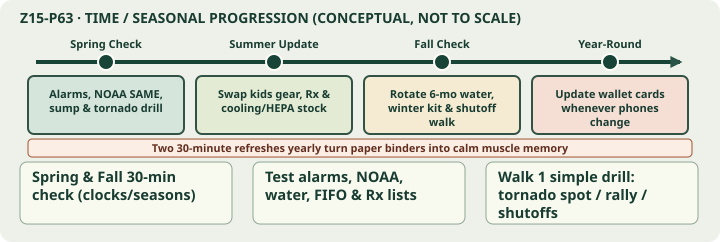

Z15-P63 · Disaster scenarios · New manuscript
Conduct twice-yearly household disaster drills, kit refreshes, and route checks
Turn paper disaster plans into calm muscle memory while keeping batteries, water, food, and contact cards fresh year-round.
When it applies · Every household, apartment, family with children, and rural property.
Equipment · Semi-annual spring/autumn calendar reminder, 30-minute drill checklist, and kit rotation log.

Actions
- Anchor a simple 30-minute household preparedness check twice every year (spring severe-weather/flood prep and autumn winter/heating prep): test every smoke and CO alarm, swap expired batteries/water/food (FIFO), update children's clothing sizes and prescription lists, and verify NOAA radio reception.[T12, U12, D02]
- Practice ONE realistic low-stress drill each season—walking to the tornado basement safe spot in two minutes with shoes/helmets, pointing out the main water/breaker shutoffs, reviewing the two neighborhood/out-of-town rally points, and testing a brief text check-in with your out-of-area relay contact.[D01, T11, D03]
- Update wallet contact cards and school/workplace authorized pick-up forms immediately whenever phone numbers, addresses, or household medical needs change.[T11, T10]
Failure recognition · Writing an elaborate emergency binder five years ago and never updating disconnected phone numbers, expired CO alarms, or dead flashlight batteries.[T12, U12]
Verify · Confirm spring and autumn 30-minute refreshes completed, one physical drill walked cleanly, and contact cards updated.[T12, D01]
Stop or change course · Any missing critical equipment (expired CO alarm, dead radio, missing pet carrier, expired infant formula) discovered during a drill gets fixed that same week.[T12, U12, P15]
Evidence and editorial notes
- D01 · FEMA / Ready.gov · Be Informed and Multi-Hazard Preparedness (current web edition)
- Section: Be Informed > Local Hazard Assessment, Alerts, and Jurisdiction Mapping · Conditions: Households preparing for regional multi-hazard emergencies
Support: Identify specific local hazards, sign up for county/municipal opt-in alerts alongside WEA/EAS and NOAA Weather Radio, know official evacuation zone labels, and review household plans twice yearly.
Limitations: Emergency warning systems, siren policies, and shelter locations vary strictly by county and municipality. · Conflicting evidence: None; aligns with T14 and T15.
Editorial note: Establishes jurisdiction-specific alert and planning baseline in Z15. · Specialist reviewer: Emergency management specialist
Primary source · checked 2026-11-24 - D02 · Minnesota HSEM · Weather Awareness and Preparedness (current web edition)
- Section: Minnesota Severe Weather and Winter Hazard Seasonal Profile · Conditions: Upper Midwest and Minnesota households across annual hazard seasons
Support: Anticipate Minnesota's distinct multi-hazard calendar: spring snowmelt flooding, spring–summer severe thunderstorms, derechos, tornadoes, and extreme heat, wildfire smoke plumes, and autumn–winter blizzards, ice storms, and wind-chill emergencies.
Limitations: Weather extremes increasingly occur outside historical peak months; rely on live NWS forecasts over calendar assumptions. · Conflicting evidence: None; grounds regional Upper Midwest applicability in Z15.
Editorial note: Connects seasonal hazard preparedness to local agency advisories. · Specialist reviewer: Regional emergency management and meteorology
Primary source · checked 2026-11-24 - D03 · FEMA / Ready.gov · Tornadoes (current web edition)
- Section: Tornadoes > Watch vs Warning, Safe Room Selection, and Post-Storm Hazards · Conditions: Developing supercells, Tornado Watches, and Tornado Warnings
Support: Act immediately on a Tornado Warning by moving to a FEMA safe room, storm shelter, basement, or lowest-level small interior room away from windows; protect head/neck from flying debris, never shelter in vehicles/mobile homes or under overpasses, and watch for downed power lines and gas leaks afterward.
Limitations: Outdoor sirens are designed to alert people outdoors and may be inaudible inside insulated homes during storms. · Conflicting evidence: None; aligns with E17 and NWS-TORNADO.
Editorial note: Core tornado shelter-selection and post-storm hazard evidence in Z15. · Specialist reviewer: Meteorology and emergency management
Primary source · checked 2026-11-24 - P15 · FEMA / Ready.gov · Emergency Food Supply (current web edition)
- Section: Emergency Food Inventory > Non-Perishable Rotation, Dietary Needs, and Tools · Conditions: Household multi-day to 30-day emergency pantry planning
Support: Build a rotated pantry of familiar shelf-stable foods requiring minimal water and no refrigeration (canned proteins/vegetables, dry grains/legumes, nut butters, infant/medical/pet diets), keep a manual can opener, and mark purchase/rotation dates clearly (FIFO).
Limitations: Do not invent unverified multi-decade shelf lives; commercial "Best By" dates reflect quality while damaged, rusted, or dented-seam cans pose safety hazards. · Conflicting evidence: None; aligns with FSG-4 and NCHFP storage hygiene.
Editorial note: Grounds household food inventory, FIFO rotation, and can-integrity screening. · Specialist reviewer: Household preparedness and food safety
Primary source · checked 2026-11-24 - T10 · FEMA / Ready.gov · People with Disabilities (current web edition)
- Section: People with Disabilities > Make a Plan and Build a Kit · Conditions: Individuals with mobility, sensory, medical, or power-dependent access and functional needs
Support: Build a personal support network, plan accessible evacuation transport, register voluntarily with local emergency registries where available, and plan backup power and spare supplies for medical devices, medications, and service animals.
Limitations: Local registry availability and utility priority-restoration policies vary by jurisdiction. · Conflicting evidence: None; extends generic preparedness plans to accessible requirements.
Editorial note: Directly addresses Z01 accessible emergency planning requirement. · Specialist reviewer: Accessible emergency management and disability preparedness
Primary source · checked 2026-11-24 - T11 · FEMA / Ready.gov · Make a Plan (current web edition)
- Section: Make a Plan > Family Emergency Communication Plan · Conditions: Households and traveling groups preparing for disruptions
Support: Record out-of-area contacts, local meeting places, medical/allergy summaries, and alternate communication channels (text vs voice) in paper and offline formats; practice the plan periodically.
Limitations: Cellular networks often congest during disasters while SMS or out-of-area contacts may still connect. · Conflicting evidence: None; complements outdoor trip-plan cards.
Editorial note: Anchors emergency communication protocols and group contingency plans. · Specialist reviewer: Emergency management and communications
Primary source · checked 2026-11-24 - T12 · FEMA / Ready.gov · Build a Kit (current web edition)
- Section: Build a Kit > Basic Disaster Supplies Kit and Maintenance · Conditions: Overnight and multi-day emergency readiness
Support: Assemble water, food, light, NOAA/battery radio, first aid, whistle, local maps, sanitation, medications, and backup power; inspect expiration dates and batteries regularly.
Limitations: Standard 72-hour kits do not cover extended multi-day isolation without replenishment or specialized cold/medical items. · Conflicting evidence: None; links kit readiness to periodic maintenance checks.
Editorial note: Supports equipment readiness, inspection, and overnight-emergency cards. · Specialist reviewer: Emergency management and field readiness
Primary source · checked 2026-11-24 - U12 · CPSC · CO Alarms (current web edition)
- Section: Home Alarms > Smoke, Carbon Monoxide, and Battery Backup Readiness · Conditions: Occupied residences with fuel-burning furnaces, water heaters, attached garages, or outage generators
Support: Maintain interconnected or battery-backed CO and smoke alarms on every floor and outside sleeping rooms, replace expired sensors on schedule, and keep exterior furnace/dryer/exhaust vents clear of drifting snow.
Limitations: Blocked high-efficiency PVC furnace intake/exhaust pipes in heavy snow can force CO back indoors or lock out heating systems. · Conflicting evidence: None; integrates with C09 and Z13-R03.
Editorial note: Connects winter snow-drift vent inspection to household CO prevention. · Specialist reviewer: Carbon monoxide safety and residential HVAC
Primary source · checked 2026-11-24
Source lineage · FEMA Ready.gov Make a Plan and Build a Kit; new manuscript · Classification · New manuscript.